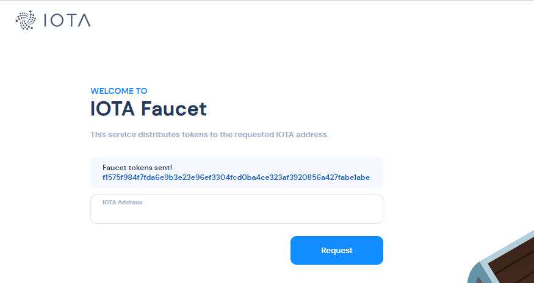

Examples
Account manager and individual accounts
First of all, let's initialize (open) a secure storage for individual accounts (backed up by Stronghold by default) using AccountManager instance:
# Copyright 2020 IOTA Stiftung
# SPDX-License-Identifier: Apache-2.0
import iota_wallet as iw
import os
from dotenv import load_dotenv
# Load the env variables
load_dotenv()
# Get the stronghold password
STRONGHOLD_PASSWORD = os.getenv('STRONGHOLD_PASSWORD')
account_manager = iw.AccountManager(
storage_path='./alice-database'
) # note: `storage` and `storage_path` have to be declared together
account_manager.set_stronghold_password(STRONGHOLD_PASSWORD)
# mnemonic (seed) should be set only for new storage
# once the storage has been initialized earlier then you should omit this step
account_manager.store_mnemonic("Stronghold")
- Storage is initialized under the given path (
./alice-database) - Password is set (
password) - Only during the initialization new database: stronghold mnemonic (seed) is automatically generated and stored by default
The storage is encrypted at rest and so you need a strong password and location where to put your storage.
Please note: deal with the password with utmost care
Technically speaking, the storage means a single file called wallet.stronghold. It is also needed to generate a seed (mnemonic) that serves as a cryptographic key from which all accounts and related addresses are generated.
One of the key principle behind the stronghold-based storage is that no one can get a seed from the storage. You deal with all accounts purely via Account_Manager instance and all complexities are hidden under the hood and are dealt with in a secure way.
In case one would like to store a seed also somewhere else, there is a method AccountManager.generate_mnemonic() that generates random seed and it can be leveraged before the actual account initialization.
Please note, it is highly recommended to store stronghold password and stronghold database on separate devices.
Accounts
The library uses a model of individual accounts to separate individual users/clients from each other. It is possible to generate multiple addresses for each account deterministically.
Please note, it is important to declare on which IOTA network should be the given account created (argument node).
# ... continue from prev example 1a
# general Tangle specific options
client_options = {
"nodes": [
{
"url": "https://api.hornet-0.testnet.chrysalis2.com",
"auth": None,
"disabled": False
}
],
"local_pow": True
}
# an account is generated with the given alias via `account_initialiser`
account_initialiser = account_manager.create_account(client_options)
account_initialiser.alias('Alice')
# initialise account based via `account_initialiser`
# store it to db and sync with Tangle
account = account_initialiser.initialise()
print(f'Account created: {account.alias()}')
Once an account has been created you get an instance of it using the following methods: get_account(account_id: str) or get_accounts().
An account can be then referred to via index, alias or one of its generated addresses. The network against which the account is active can be checked via account.bech32_hrp().
Overview of all accounts:
for acc in account_manager.get_accounts():
print(f"Account alias: {acc.alias()}; network: {acc.bech32_hrp()}")
Get the instance of a specific account:
account = account_manager.get_account("Alice")
Several api calls can be performed via account instance. Note: it is a good practice to sync the given account with the Tangle every time you work with account instance to rely on the latest information available: account.sync().execute().
The most common methods:
account.alias(): returns an alias of the given accountaccount.addresses(): returns list of addresses related to the accountaccount.get_unused_address(): returns a first unused addressaccount.is_latest_address_unused(): it queries the Tangle and returnsboolwhether latest address was already usedaccount.generate_address(): generate a new address for the address index incremented by 1account.balance(): returns the balance for the given accountaccount.sync(): sync the account information with the tangle
Generating address(es)
Each account can posses multiple addresses. Addresses are generated deterministically based on the account and address index. It means that the combination of account and index uniquely identifies the given address.
Addresses are of two types: internal and public (external):
- each set of addresses is independent from each other and has independent
indexid - addresses that are created by
account.generate_address()are indicated asinternal=false(public) - internal addresses (
internal=true) are so calledchangeaddresses and are used to send the excess funds to - the approach is also known as a BIP32 Hierarchical Deterministic wallet (HD Wallet).
Note: You may remember IOTA 1.0 network in which addresses were not reusable. It is no longer true and addresses can be reused multiple times in IOTA 1.5 (Chrysalis) network.
Addresses are generated via instance of account that is gotten from the account_manager instance:
# Copyright 2020 IOTA Stiftung
# SPDX-License-Identifier: Apache-2.0
import iota_wallet as iw
import os
from dotenv import load_dotenv
# Load the env variables
load_dotenv()
# Get the stronghold password
STRONGHOLD_PASSWORD = os.getenv('STRONGHOLD_PASSWORD')
# This example generates a new address.
account_manager = iw.AccountManager(
storage_path='./alice-database'
)
account_manager.set_stronghold_password(STRONGHOLD_PASSWORD)
# get a specific instance of some account
account = account_manager.get_account('Alice')
print(f'Account: {account.alias()}')
# Always sync before doing anything with the account
print('Syncing...')
synced = account.sync().execute()
# generate new address
address = account.generate_address()
print(f'New address: {address}')
# print all addresses generated so far
print("List of addresses:")
print(account.addresses())
# You can also get the latest unused address
last_address_obj = account.latest_address()
print(f"Last address: {last_address_obj['address']}")
Output example:
[{'address': {'inner': 'atoi1qzy79ew8x4hn4dsr0t3j8ce8hdwdrh8xzx85x2gkse6k0fx2jkyaqdgd2rn'},
'balance': 0,
'key_index': 0,
'internal': False,
'outputs': []},
{'address': {'inner': 'atoi1qzht4m2jt0q50lhlqa786pcx6vardm4xj8za72fezde6tj39acatq5zh2cg'},
'balance': 0,
'key_index': 1,
'internal': False,
'outputs': []}]
Take a closer look at the output above and check the beginning of both addresses. As mentioned in overview chapter there are two human-readable prefixes in IOTA 1.5 network: iota (mainnet) and atoi (testnet).
Checking the balance
Before we continue further, go to IOTA testnet faucet service and send to your testnet addresses some tokens: 
# Copyright 2020 IOTA Stiftung
# SPDX-License-Identifier: Apache-2.0
import iota_wallet as iw
import os
from dotenv import load_dotenv
# Load the env variables
load_dotenv()
# Get the stronghold password
STRONGHOLD_PASSWORD = os.getenv('STRONGHOLD_PASSWORD')
# This example checks the account balance.
account_manager = iw.AccountManager(
storage_path='./alice-database'
)
account_manager.set_stronghold_password(STRONGHOLD_PASSWORD)
# get a specific instance of some account
account = account_manager.get_account('Alice')
print(f'Account: {account.alias()}')
# Always sync before doing anything with the account
print('Syncing...')
synced = account.sync().execute()
# get total balance for the account
print("Total balance:")
print(account.balance())
print("Balance per individual addresses:")
print(account.addresses())
Output:
Total balance:
{'total': 10000000, 'available': 10000000, 'incoming': 10000000, 'outgoing': 0}
Balance per individual addresses:
[{'address': {'inner': 'atoi1qzy79ew8x4hn4dsr0t3j8ce8hdwdrh8xzx85x2gkse6k0fx2jkyaqdgd2rn'},
'balance': 0,
'key_index': 0,
'internal': False,
'outputs': []},
{'address': {'inner': 'atoi1qzht4m2jt0q50lhlqa786pcx6vardm4xj8za72fezde6tj39acatq5zh2cg'},
'balance': 10000000,
'key_index': 1,
'internal': False,
'outputs': [{'transaction_id': '1c88c91fe0a8eed074b5ccdfdad52403d7908d157b231ae1ef28b0e20ba14e8e',
'message_id': 'f1575f984f7fda6e9b3e23e96ef3304fcd0ba4ce323af3920856a427fabe1abe',
'index': 0,
'amount': 10000000,
'is_spent': False,
'address': {'inner': 'atoi1qzht4m2jt0q50lhlqa786pcx6vardm4xj8za72fezde6tj39acatq5zh2cg'}}]},
{'address': {'inner': 'atoi1qpvnsgygzal4vkxhlc0ew7c6c6csnjr72x5rgn3txqswrsa2xfrec8v04f7'},
'balance': 0,
'key_index': 2,
'internal': False,
'outputs': []}]
In the detailed view per individual addresses, there is also outputs section that indicates transaction(s) (also known as wallet message(s)) "responsible" for the current amount. The amount can be also double checked using Tangle Explorer.
Sending tokens
The process of sending tokens via wallet.rs can be described as follows:
- Create instance of
iota_wallet.Transfer()class with the following mandatory arguments:amount,addressandremainder_value_strategy remainder_value_strategycan be:ReuseAddressorChangeAddress. You may be familiar with a conceptchanging address with every spentin IOTA 1.0. It is not an issue in IOTA 1.5 world but it may still become handy depending on your use case- once instance of
iota_wallet.Transfer()is created, it can be sent viatransfer()function of theAccountinstance - needless to repeat, always sync the account information with the Tangle before do anything with the account
# Copyright 2020 IOTA Stiftung
# SPDX-License-Identifier: Apache-2.0
import iota_wallet as iw
import os
from dotenv import load_dotenv
# Load the env variables
load_dotenv()
# Get the stronghold password
STRONGHOLD_PASSWORD = os.getenv('STRONGHOLD_PASSWORD')
# This example sends IOTA toens to an address.
account_manager = iw.AccountManager(
storage_path='./alice-database'
)
account_manager.set_stronghold_password(STRONGHOLD_PASSWORD)
print("Selecting a specific account")
account = account_manager.get_account('Alice')
print(f'Account: {account.alias()} selected')
# Always sync before doing anything with the account
print('Syncing...')
synced = account.sync().execute()
print(f"Available balance {account.balance()['available']}")
# TODO: Replace with the address of your choice!
transfer = iw.Transfer(
amount=1_000_000,
address='atoi1qzt0nhsf38nh6rs4p6zs5knqp6psgha9wsv74uajqgjmwc75ugupx3y7x0r',
remainder_value_strategy='ReuseAddress'
)
# Propogate the Transfer to Tangle
# and get a response from the Tangle
node_response = account.transfer(transfer)
print(
node_response
)
You receive an output similar to the following one:
{'id': '9d3c401d59b0a87f6fbaa58582bb71e1858d63336421ccbae834821d9be113d3',
'version': 1,
'parents': ['66009ff08637c3e74340fb9e09e30e3c4453728c857fd425df2d2e0587af6426',
'6da392ac35f73594bf5509fb5c3304e972b36313ce98f2cc63def7cde2054b53',
'9157b29cbffcd5c9669cf22004fbc557354e5ade7268f5bfe25fbc75ab29e3b1',
'bfe860e09350cd3b8db90611e78e03fdda654139a4b34e68e4b1bb07528b2bef'],
'payload_length': 233,
'payload': {'transaction': [{'essence': {'regular': {'inputs': [{'transaction_id': '692d6660084dd3b6341ef4f761bc8b8bb27ac35bb0b352bfb030f2c80753815b',
'index': 0,
'metadata': {'transaction_id': '692d6660084dd3b6341ef4f761bc8b8bb27ac35bb0b352bfb030f2c80753815b',
'message_id': 'c6284e0cc2a6383474782d4e6b6cfaf16c1831c8875cca262982782758a248c0',
'index': 0,
'amount': 10000000,
'is_spent': False,
'address': {'inner': 'atoi1qq24vlx53qdskyfw6940xa2vg55ma5egzyqv6glq23udx3e0zkmmg97cwze'}}}],
'outputs': [{'address': 'atoi1qq24vlx53qdskyfw6940xa2vg55ma5egzyqv6glq23udx3e0zkmmg97cwze',
'amount': 9000000},
{'address': 'atoi1qpvnsgygzal4vkxhlc0ew7c6c6csnjr72x5rgn3txqswrsa2xfrec8v04f7',
'amount': 1000000}],
'payload': None}},
'unlock_blocks': [{'signature': {'public_key': [15...<TRIMMED>...],
'signature': [210...<TRIMMED>...]},
'reference': None}]}],
'milestone': None,
'indexation': None},
'timestamp': 1615132552,
'nonce': 274654,
'confirmed': None,
'broadcasted': True,
'incoming': False,
'value': 1000000,
'remainder_value': 9000000}
It is a wallet message that fully describes the given transaction.
Please, kindly get yourself familiar with a concept of UTXO to understand all aspects of messages.
The given message can be double checked via Tangle Explorer using node_response['id'] field (Tangle Explorer).
Needless to say, if remainder_value_strategy == ChangeAddress is used, the given message transfer tokens to target address as well as new internal address within the given account (internal=True).
Reattachments
If message reattachment is needed then account_id and message_id is passed to iota_wallet.promote(account_id, message_id) or iota_wallet.reattach(account_id, message_id).
List of messages (transactions)
List of all particular messages (transactions) related to the given account get be obtained via: account.list_messages() and related account.message_count().
Those can be used also to check whether the given message was confirmed/broadcasted, etc. Needless to say, sync the account with the Tangle before checking confirmation status:
# Copyright 2020 IOTA Stiftung
# SPDX-License-Identifier: Apache-2.0
import iota_wallet as iw
import os
from dotenv import load_dotenv
# Load the env variables
load_dotenv()
# Get the stronghold password
STRONGHOLD_PASSWORD = os.getenv('STRONGHOLD_PASSWORD')
# This example sends IOTA toens to an address.
account_manager = iw.AccountManager(
storage_path='./alice-database'
)
account_manager.set_stronghold_password(STRONGHOLD_PASSWORD)
account = account_manager.get_account('Alice')
print(f'Account: {account.alias()} selected')
# Always sync before doing anything with the account
print('Syncing...')
synced = account.sync().execute()
for ac in account.list_messages():
print(f"message {ac['id']}; confirmation status = {ac['confirmed']}'")
Dust protection
Please note, there is also implemented a dust protection mechanism in the network protocol to avoid malicious actors to spam network in order to decrease node performance while keeping track of unspent amount (UTXO):
"... microtransaction below 1Mi of IOTA tokens [can be sent] to another address if there is already at least 1Mi on that address" That's why we did send 1Mi in the given example to comply with the protection."
Backup database
Underlying database (provided by Stronghold by default) is encrypted at rest and there is no way how to get a seed from it due to security practices that are incorporated in the Stronghold's DNA. It means you are dealing with the database as an atomic unit that includes all wallet information.
So backing up the database is very important task from this respect.
# Copyright 2020 IOTA Stiftung
# SPDX-License-Identifier: Apache-2.0
import iota_wallet as iw
import os
from dotenv import load_dotenv
# Load the env variables
load_dotenv()
# Get the stronghold password
STRONGHOLD_PASSWORD = os.getenv('STRONGHOLD_PASSWORD')
# This example backups your data in a secure file.
# You can move this file to another app or device and restore it.
account_manager = iw.AccountManager(
storage_path='./alice-database'
)
account_manager.set_stronghold_password(STRONGHOLD_PASSWORD)
backup_dir_path = './backup'
if not os.path.exists(backup_dir_path):
os.makedirs(backup_dir_path)
backup_file_path = account_manager.backup(backup_dir_path, STRONGHOLD_PASSWORD)
print(f'Backup path: {backup_file_path}')
Output:
Backup path: ./backup/2021-03-07T18-24-06-iota-wallet-backup-wallet.stronghold
Restore database
The process of restoring underlying database via wallet.rs can be described as follows:
- create new empty database with a password (without mnemonic [seed])
- import all accounts from the file that has been backed up earlier
# Copyright 2020 IOTA Stiftung
# SPDX-License-Identifier: Apache-2.0
import iota_wallet as iw
import os
from dotenv import load_dotenv
# Load the env variables
load_dotenv()
# Get the stronghold password
STRONGHOLD_PASSWORD = os.getenv('STRONGHOLD_PASSWORD')
# This example restores a secured backup file.
account_manager = iw.AccountManager(
storage_path='./alice-database-restored'
)
# NOTE: In real use cases you need to set the password in a safer way, like getting it from env variables
account_manager.set_stronghold_password(STRONGHOLD_PASSWORD)
# Add the path to the file from example 5-backup.js
# for example: ./backup/2021-03-04T15-31-04-iota-wallet-backup-wallet.stronghold
backup_file_path = r'./backup/2021-03-31T14-45-23-iota-wallet-backup-wallet.stronghold'
# NOTE: In real use cases you need to set the password in a safer way, like getting it from env variables
account_manager.import_accounts(backup_file_path, STRONGHOLD_PASSWORD)
account = account_manager.get_account('Alice')
print(f'Account: {account.alias()}')
Since the backup file is just a copy of the original database it can be alternatively also renamed to wallet.stronghold and opened in a standard way:
account_manager = iw.AccountManager(
storage_path='./alice-database'
)
account_manager.set_stronghold_password("password")
Listening to events
Wallet.rs also supports asynchronous event listeners to be listened to. In the python binding it is currently implemented in a way the provided callback is executed as soon as the event is triggered; event details are passed as an argument to the callback method. No coroutines (async/await) are implemented in the python binding.
There are following event listeners supported:
on_balance_change(callback): idon_new_transaction(callback): idon_confirmation_state_change(callback): idon_reattachment(callback): idon_broadcast(callback): idon_error(callback): idon_stronghold_status_change(callback): id
When the event listener is registered by calling function above, it returns id of the listener as a list[Bytes]. This id can be then leveraged to deregister the given listener:
remove_balance_change_listener(id)remove_new_transaction_listener(id)remove_confirmation_state_change_listener(id)remove_reattachment_listener(id)remove_broadcast_listener(id)remove_error_listener(id)remove_stronghold_status_change_listener(id)
Example of listening to on_balance_change via simple event-based pattern in python:
# Copyright 2020 IOTA Stiftung
# SPDX-License-Identifier: Apache-2.0
import threading
import time
import iota_wallet as iw
import os
from dotenv import load_dotenv
# Load the env variables
load_dotenv()
# Get the stronghold password
STRONGHOLD_PASSWORD = os.getenv('STRONGHOLD_PASSWORD')
result_available = threading.Event()
def balance_changed_event_processing(event):
print(f'On balanced changed: {event}')
result_available.set()
# This example shows some events.
account_manager = iw.AccountManager(
storage_path='./alice-database'
)
# NOTE: In real use cases you need to set the password in a safer way, like getting it from env variables
account_manager.set_stronghold_password(STRONGHOLD_PASSWORD)
account = account_manager.get_account('Alice')
print(f'Account: {account.alias()}')
# Always sync before doing anything with the account
print('Syncing...')
synced = account.sync().execute()
# Get the latest unused address
last_address_obj = account.latest_address()
print(f"Address: {last_address_obj['address']}")
# Use the Chrysalis Faucet to send testnet tokens to your address:
print('Fill your address with the Faucet: https://faucet.tanglekit.de/')
iw.on_balance_change(balance_changed_event_processing)
print("Waiting for external event (on_balance_changed)...")
# wait for results to be available before continue
# will not wait longer than 360 seconds
result_available.wait(timeout=360)
print("Done.")
Output:
Account: Alice
Syncing...
Address: {'inner': 'atoi1qquszp0hzfsrgx4vx58dfg4v6eh20d2k3ddfgg9dt5778c2egc9uyw7g457'}
Fill your address with the Faucet: https://faucet.testnet.chrysalis2.com/
Waiting for external event (on_balance_changed)...
On balanced changed: {"indexationId":"c3a7a1ab8ba78460954223a704693d088ddd0388681ac6cc1dd964a388d1a619","accountId":"wallet-account://e51a6285ea2d8cbdf5b6da2b85a8344f619d798d869ef4fb88c5fac0e653d6cc","address":"atoi1qquszp0hzfsrgx4vx58dfg4v6eh20d2k3ddfgg9dt5778c2egc9uyw7g457","balanceChange":{"spent":0,"received":10000000}}
Done.
Alternatively it can be consumed via queue-base pattern:
# Copyright 2020 IOTA Stiftung
# SPDX-License-Identifier: Apache-2.0
import iota_wallet
import threading
import queue
import time
import os
from dotenv import load_dotenv
# Load the env variables
load_dotenv()
# Get the stronghold password
STRONGHOLD_PASSWORD = os.getenv('STRONGHOLD_PASSWORD')
# This example shows how to listen to on_balance_change event.
# The queue to store received events
q = queue.Queue()
def worker():
"""The worker to process the queued events.
"""
while True:
item = q.get(True)
print(f'Get event: {item}')
q.task_done()
def balance_changed_event_processing(event):
"""Processing function when event is received.
"""
print(f'On balanced changed: {event}')
q.put(event)
# Get the acount manager
manager = iota_wallet.AccountManager(
storage_path='./alice-database')
# NOTE: In real use cases you need to set the password in a safer way, like getting it from env variables
manager.set_stronghold_password(STRONGHOLD_PASSWORD)
# Get the account
account = manager.get_account('Alice')
print(f'Account: {account.alias()}')
# Always sync before doing anything with the account
print('Syncing...')
synced = account.sync().execute()
# Get the latest unused address
last_address_obj = account.latest_address()
print(f"Address: {last_address_obj['address']}")
# turn-on the worker thread
threading.Thread(target=worker, daemon=True).start()
# listen to the on_balance_change event
iota_wallet.on_balance_change(balance_changed_event_processing)
# Use the Chrysalis Faucet to send testnet tokens to your address:
print(
f"Fill your Address ({last_address_obj['address']['inner']}) with the Faucet: https://faucet.tanglekit.de/")
print("To see how the on_balance_change is called, please send tokens to the address in 1 min")
time.sleep(60)
# block until all tasks are done
q.join()
print('All work completed')